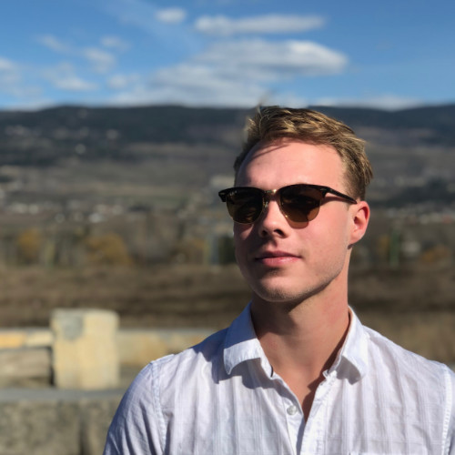

I'm a Masters student at McGill University as part of the Oberman Lab. The lab's focus is on the mathematics and optimization of deep neural networks. I'm currently involved in projects related to contrastive learning and mitigating bias in facial recognition models.
I did my undergraduate degree in Honours Mathematics at UBC Okanagan along with a Minor in data science. My honours studies were completed with Dr. Warren Hare, studying derivative free optimization. I was awarded an NSERC USRA grant to work with Dr.Rebecca Tyson, in order to develop a mathematical model of a local Western Toad population. In between my undergraduate and master's degrees I completed projects modelling the economic impact of Covid-19 on British Columbia as well as the connection between opinion and disease dynamics. These papers are currently under review with a preprint available.
Since 2019, I've been working with the Mathematical Climate Research Network developing a new data assimilation method. After two years, we have submitted our work to Computers and Mathematics with Applications.
The home animation performs kmeans clustering followed by a rule and composs construction of the cluster's convex hull.